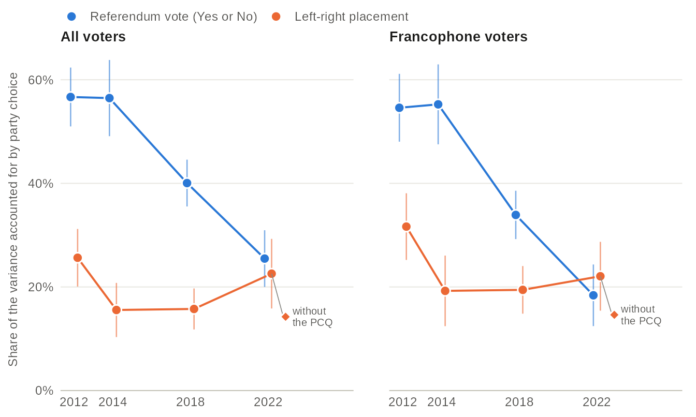
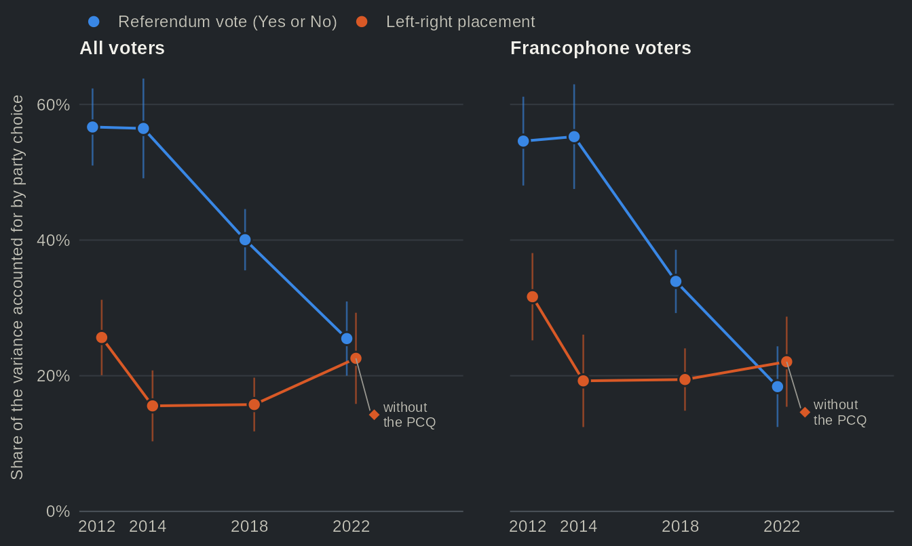

Two dimensions of competition: sovereignty and left-right
Source:vignettes/articles/dimensions.Rmd
dimensions.RmdFor four decades, the national question organized party competition in Quebec. The Parti Québécois (PQ) stood for sovereignty, the Parti libéral du Québec (PLQ) for federalism, and a voter’s position on independence went a long way toward predicting their vote (Bélanger et al. 2018). The rise of the Coalition avenir Québec (CAQ) and of Québec solidaire (QS), and the CAQ’s victory in 2018, have changed that picture. The conventional wisdom, reflected in recent work on the new party system (Bélanger and Mahéo 2020; Bélanger et al. 2022), is now that the sovereignty axis has faded and that a left-right axis has taken its place, with the PQ squeezed between a nationalist party that set the referendum aside and a sovereigntist party on the left. On this page, we examine whether the Quebec Election Studies bear this out: has the national question stopped structuring the Quebec vote, and has the left-right scale taken over?
Overall, we find mixed support for the conventional wisdom. The first half holds. In 2012, party choice accounted for 57% of the variation in the referendum vote (knowing which party a respondent voted for told us 57% of what there was to know about their referendum vote); in 2022, it accounted for 25%. The second half does not hold. The left-right scale did not fill the gap: party choice accounted for 26% of the variation in left-right placement in 2012 and 23% in 2022. Leaving aside the voters of the Parti conservateur du Québec (PCQ), which went from 1.5% of the vote in 2018 to 12.9% in 2022, the figure falls to 14%. In other words, the national question lost ground without being replaced. It still separates the two historic parties as sharply as ever: in 2022, 82% of PQ voters would have voted Yes, against 2% of PLQ voters.
We use three questions asked, in similar form, in every Quebec Election Study from 2012 to 2022: the vote reported after the election, the vote in a referendum on independence, and the respondent’s own placement on a left-right scale from 0 (left) to 10 (right). Mother tongue lets us look at francophones on their own. In the Quebec Election Studies used here, the referendum question goes back to 2007, so the second figure starts then. The end of the page shows how to reproduce the figures.
The poles held; the newcomers converged


Source: Quebec Election Studies 2012, 2014, 2018 and 2022, weighted. Reported vote after the election; referendum vote among respondents who chose Yes or No. The parties are set side by side at each election, and the two panels have their own scales. The PCQ was offered as an answer in 2022 only.
Table view
| Party | Election | Study | Left-right, mean [95% CI] | n (left-right) | Yes, % [95% CI] | n (Yes/No) | Weighting |
|---|---|---|---|---|---|---|---|
| PLQ | 2012 | QES 2012 | 6.52 [6.24, 6.79] | 228 | 1.3 [0.4, 4.0] | 269 | weighted |
| PLQ | 2014 | QES 2014 | 6.29 [6.01, 6.56] | 393 | 2.9 [1.3, 6.5] | 482 | weighted |
| PLQ | 2018 | QES 2018 | 5.92 [5.68, 6.16] | 432 | 2.5 [1.3, 4.8] | 477 | weighted |
| PLQ | 2022 | QES 2022 | 4.80 [4.19, 5.42] | 140 | 2.2 [0.8, 5.7] | 141 | weighted |
| PQ | 2012 | QES 2012 | 4.39 [4.16, 4.61] | 422 | 84.5 [80.4, 87.8] | 448 | weighted |
| PQ | 2014 | QES 2014 | 4.67 [4.28, 5.06] | 289 | 87.4 [82.2, 91.3] | 299 | weighted |
| PQ | 2018 | QES 2018 | 4.56 [4.33, 4.78] | 342 | 85.9 [81.6, 89.4] | 344 | weighted |
| PQ | 2022 | QES 2022 | 4.52 [4.25, 4.79] | 204 | 82.0 [74.6, 87.6] | 174 | weighted |
| QS | 2012 | QES 2012 | 3.11 [2.68, 3.53] | 89 | 62.6 [49.4, 74.1] | 87 | weighted |
| QS | 2014 | QES 2014 | 3.41 [2.93, 3.88] | 118 | 63.4 [52.3, 73.3] | 110 | weighted |
| QS | 2018 | QES 2018 | 3.70 [3.42, 3.98] | 302 | 56.2 [49.8, 62.4] | 280 | weighted |
| QS | 2022 | QES 2022 | 3.66 [3.27, 4.05] | 207 | 43.8 [34.8, 53.2] | 171 | weighted |
| CAQ | 2012 | QES 2012 | 6.29 [6.04, 6.55] | 261 | 18.8 [14.5, 24.0] | 298 | weighted |
| CAQ | 2014 | QES 2014 | 5.68 [5.39, 5.98] | 223 | 21.0 [15.7, 27.4] | 244 | weighted |
| CAQ | 2018 | QES 2018 | 6.00 [5.82, 6.17] | 601 | 31.0 [27.1, 35.3] | 574 | weighted |
| CAQ | 2022 | QES 2022 | 5.55 [5.36, 5.74] | 351 | 37.8 [29.9, 46.4] | 300 | weighted |
| PCQ | 2022 | QES 2022 | 6.73 [6.38, 7.07] | 143 | 21.5 [14.9, 30.1] | 137 | weighted |
Two results stand out. First, the two historic poles did not move on the national question. PQ voters remain overwhelmingly sovereigntist (84% would vote Yes in 2012, 82% in 2022) and PLQ voters almost unanimously federalist (1% and 2%). Second, the two newer parties moved toward each other. CAQ voters went from 19% Yes in 2012 to 38% in 2022, and QS voters from 63% to 44%. The CAQ now draws a good share of its vote from sovereigntists. Contrary to what one might expect of a sovereigntist party, a majority of QS voters (56%) would now vote No. The 2012 estimate rests on only 87 respondents, however, and its interval is wide (49% to 74%).
Movements on the left-right scale are smaller, with one exception. QS voters are the furthest left at every election (3.7 out of 10 in 2022) and PCQ voters the furthest right (6.7). The exception is the PLQ: its voters went from 6.5 in 2012 to 4.8 in 2022. In 2022, they stood to the left of CAQ voters (5.5), close to PQ voters (4.5). This estimate rests on 140 respondents, and the 2022 question was worded differently (see About the data), so the size of the shift should be read with caution. The right of the scale now belongs to the CAQ and the PCQ. Note, however, what happened between the two sovereigntist parties. PQ and QS voters are close on left-right (1.3 points apart on the 0-10 scale in 2012, 0.8 in 2022), while their gap on sovereignty grew from 21 to 38 percentage points. What separates their electorates today is the national question more than the left-right scale.
Yes voters now split among three parties


Source: Quebec Election Studies 2007 to 2022, weighted, except 2008 (hollow: unweighted). 2007 and 2008 asked the 1995 referendum question, 2012 to 2022 a question on an independent country, so the lines break at the change. The other parties (Green Party, Option nationale and others) are in the table view.
Table view
| Election | Study | Referendum vote | Party | Share of reported vote [95% CI] | n | Weighting |
|---|---|---|---|---|---|---|
| 2007 | QES 2007 | Yes | PLQ | 3.9 [2.5, 6.2] | 735 | weighted |
| 2007 | QES 2007 | Yes | PQ | 58.1 [53.7, 62.3] | 735 | weighted |
| 2007 | QES 2007 | Yes | ADQ | 25.4 [21.8, 29.4] | 735 | weighted |
| 2007 | QES 2007 | Yes | QS | 7.7 [5.6, 10.5] | 735 | weighted |
| 2007 | QES 2007 | Yes | CAQ | — | 735 | weighted |
| 2007 | QES 2007 | Yes | PCQ | — | 735 | weighted |
| 2007 | QES 2007 | Yes | Other | 4.9 [3.4, 7.0] | 735 | weighted |
| 2007 | QES 2007 | No | PLQ | 44.4 [40.3, 48.5] | 913 | weighted |
| 2007 | QES 2007 | No | PQ | 9.4 [7.0, 12.4] | 913 | weighted |
| 2007 | QES 2007 | No | ADQ | 35.5 [31.8, 39.5] | 913 | weighted |
| 2007 | QES 2007 | No | QS | 2.2 [1.3, 3.9] | 913 | weighted |
| 2007 | QES 2007 | No | CAQ | — | 913 | weighted |
| 2007 | QES 2007 | No | PCQ | — | 913 | weighted |
| 2007 | QES 2007 | No | Other | 8.5 [6.3, 11.3] | 913 | weighted |
| 2008 | QES 2008 | Yes | PLQ | 10.0 [7.4, 13.4] | 389 | unweighted (weight under review) |
| 2008 | QES 2008 | Yes | PQ | 73.3 [68.6, 77.4] | 389 | unweighted (weight under review) |
| 2008 | QES 2008 | Yes | ADQ | 6.9 [4.8, 9.9] | 389 | unweighted (weight under review) |
| 2008 | QES 2008 | Yes | QS | 6.9 [4.8, 9.9] | 389 | unweighted (weight under review) |
| 2008 | QES 2008 | Yes | CAQ | — | 389 | unweighted (weight under review) |
| 2008 | QES 2008 | Yes | PCQ | — | 389 | unweighted (weight under review) |
| 2008 | QES 2008 | Yes | Other | 2.8 [1.6, 5.0] | 389 | unweighted (weight under review) |
| 2008 | QES 2008 | No | PLQ | 66.7 [62.3, 70.9] | 451 | unweighted (weight under review) |
| 2008 | QES 2008 | No | PQ | 7.3 [5.2, 10.1] | 451 | unweighted (weight under review) |
| 2008 | QES 2008 | No | ADQ | 21.7 [18.2, 25.8] | 451 | unweighted (weight under review) |
| 2008 | QES 2008 | No | QS | 1.6 [0.7, 3.2] | 451 | unweighted (weight under review) |
| 2008 | QES 2008 | No | CAQ | — | 451 | unweighted (weight under review) |
| 2008 | QES 2008 | No | PCQ | — | 451 | unweighted (weight under review) |
| 2008 | QES 2008 | No | Other | 2.7 [1.5, 4.6] | 451 | unweighted (weight under review) |
| 2012 | QES 2012 | Yes | PLQ | 0.8 [0.2, 2.4] | 529 | weighted |
| 2012 | QES 2012 | Yes | PQ | 73.3 [68.9, 77.2] | 529 | weighted |
| 2012 | QES 2012 | Yes | ADQ | — | 529 | weighted |
| 2012 | QES 2012 | Yes | QS | 9.6 [7.1, 12.8] | 529 | weighted |
| 2012 | QES 2012 | Yes | CAQ | 10.9 [8.4, 14.2] | 529 | weighted |
| 2012 | QES 2012 | Yes | PCQ | n.l. | 529 | weighted |
| 2012 | QES 2012 | Yes | Other | 5.5 [3.9, 7.7] | 529 | weighted |
| 2012 | QES 2012 | No | PLQ | 45.8 [41.4, 50.3] | 635 | weighted |
| 2012 | QES 2012 | No | PQ | 10.2 [8.0, 13.0] | 635 | weighted |
| 2012 | QES 2012 | No | ADQ | — | 635 | weighted |
| 2012 | QES 2012 | No | QS | 4.3 [2.8, 6.6] | 635 | weighted |
| 2012 | QES 2012 | No | CAQ | 35.9 [31.9, 40.2] | 635 | weighted |
| 2012 | QES 2012 | No | PCQ | n.l. | 635 | weighted |
| 2012 | QES 2012 | No | Other | 3.7 [2.4, 5.6] | 635 | weighted |
| 2014 | QES 2014 | Yes | PLQ | 3.1 [1.4, 6.9] | 416 | weighted |
| 2014 | QES 2014 | Yes | PQ | 67.5 [62.1, 72.4] | 416 | weighted |
| 2014 | QES 2014 | Yes | ADQ | — | 416 | weighted |
| 2014 | QES 2014 | Yes | QS | 12.9 [10.1, 16.4] | 416 | weighted |
| 2014 | QES 2014 | Yes | CAQ | 12.8 [9.5, 17.0] | 416 | weighted |
| 2014 | QES 2014 | Yes | PCQ | n.l. | 416 | weighted |
| 2014 | QES 2014 | Yes | Other | 3.7 [2.0, 6.7] | 416 | weighted |
| 2014 | QES 2014 | No | PLQ | 59.7 [55.4, 63.8] | 756 | weighted |
| 2014 | QES 2014 | No | PQ | 5.6 [3.9, 8.1] | 756 | weighted |
| 2014 | QES 2014 | No | ADQ | — | 756 | weighted |
| 2014 | QES 2014 | No | QS | 4.3 [3.0, 6.3] | 756 | weighted |
| 2014 | QES 2014 | No | CAQ | 28.0 [24.3, 32.1] | 756 | weighted |
| 2014 | QES 2014 | No | PCQ | n.l. | 756 | weighted |
| 2014 | QES 2014 | No | Other | 2.3 [1.4, 3.8] | 756 | weighted |
| 2018 | QES 2018 | Yes | PLQ | 1.7 [0.9, 3.4] | 652 | weighted |
| 2018 | QES 2018 | Yes | PQ | 45.3 [41.2, 49.5] | 652 | weighted |
| 2018 | QES 2018 | Yes | ADQ | — | 652 | weighted |
| 2018 | QES 2018 | Yes | QS | 23.3 [20.0, 27.0] | 652 | weighted |
| 2018 | QES 2018 | Yes | CAQ | 28.3 [24.7, 32.3] | 652 | weighted |
| 2018 | QES 2018 | Yes | PCQ | n.l. | 652 | weighted |
| 2018 | QES 2018 | Yes | Other | 1.3 [0.6, 2.7] | 652 | weighted |
| 2018 | QES 2018 | No | PLQ | 40.2 [37.1, 43.3] | 1109 | weighted |
| 2018 | QES 2018 | No | PQ | 4.4 [3.3, 5.8] | 1109 | weighted |
| 2018 | QES 2018 | No | ADQ | — | 1109 | weighted |
| 2018 | QES 2018 | No | QS | 10.7 [8.9, 12.8] | 1109 | weighted |
| 2018 | QES 2018 | No | CAQ | 37.0 [34.0, 40.1] | 1109 | weighted |
| 2018 | QES 2018 | No | PCQ | n.l. | 1109 | weighted |
| 2018 | QES 2018 | No | Other | 7.8 [6.2, 9.8] | 1109 | weighted |
| 2022 | QES 2022 | Yes | PLQ | 1.2 [0.4, 3.0] | 360 | weighted |
| 2022 | QES 2022 | Yes | PQ | 35.3 [29.5, 41.6] | 360 | weighted |
| 2022 | QES 2022 | Yes | ADQ | — | 360 | weighted |
| 2022 | QES 2022 | Yes | QS | 20.1 [15.3, 26.1] | 360 | weighted |
| 2022 | QES 2022 | Yes | CAQ | 33.8 [26.7, 41.8] | 360 | weighted |
| 2022 | QES 2022 | Yes | PCQ | 9.0 [6.1, 13.1] | 360 | weighted |
| 2022 | QES 2022 | Yes | Other | 0.5 [0.1, 2.4] | 360 | weighted |
| 2022 | QES 2022 | No | PLQ | 28.5 [22.8, 35.0] | 590 | weighted |
| 2022 | QES 2022 | No | PQ | 4.2 [2.8, 6.2] | 590 | weighted |
| 2022 | QES 2022 | No | ADQ | — | 590 | weighted |
| 2022 | QES 2022 | No | QS | 14.0 [11.0, 17.5] | 590 | weighted |
| 2022 | QES 2022 | No | CAQ | 30.2 [25.6, 35.1] | 590 | weighted |
| 2022 | QES 2022 | No | PCQ | 17.8 [14.3, 21.8] | 590 | weighted |
| 2022 | QES 2022 | No | Other | 5.4 [2.9, 10.0] | 590 | weighted |
We now turn from where each party’s voters stand to where each camp’s voters go. In 2012, the PQ took 73% of the reported vote of respondents who would vote Yes; in 2022, it took 35%, about as much as the CAQ (34%), with QS at 20%. In other words, the PQ now holds about a third of the Yes vote. The party vote of No voters spread out as well. The PLQ’s share fell from 46% in 2012 to 29% in 2022, while the CAQ held a large share throughout (36% in 2012, 30% in 2022) and the PCQ took 18% in 2022. Unsurprisingly for a party that promised not to hold a referendum, the CAQ is the only party that took about a third of each camp in 2022 (34% of Yes voters and 30% of No voters).
Two caveats apply. First, the 2007 and 2008 studies asked the 1995 referendum question and the later ones a question on an independent country, and the wording of the question is known to move support for sovereignty (Yale and Durand 2011); the lines break at the change for that reason. Second, the 2022 study under-reports the CAQ vote by about 8 points compared to the official result (see Survey vs official results), which lowers the CAQ’s share of both camps that year. The near-tie between the PQ and the CAQ among Yes voters is therefore, if anything, favourable to the PQ.
Sovereignty divides the vote much less; left-right did not take over
The first two figures show positions. They do not tell us how much each axis separates the electorates, which is the heart of the conventional wisdom. To answer that, we apply the same measure to each study: of all the variation in respondents’ referendum vote, or in their left-right placement, how much lies between the parties’ electorates rather than within them? This is the share of the variance accounted for by party choice (an eta squared). At 100%, knowing someone’s vote would tell us their answer exactly; at 0%, it would tell us nothing. Both shares are computed on the same respondents, those who answered both questions and voted for one of the parties shown above.


Source: Quebec Election Studies 2012, 2014, 2018 and 2022, weighted. Respondents who answered both questions and reported a vote for the PLQ, the PQ, the CAQ, QS or (2022) the PCQ; francophones are respondents whose mother tongue is French. Diamond: the 2022 left-right share without the PCQ's voters. Intervals from 500 bootstrap replicates of each study.
Table view
| Voters | Parties | Question | Election | Study | Share of variance, % [95% CI] | n | Weighting |
|---|---|---|---|---|---|---|---|
| All voters | all parties shown | Referendum vote (Yes or No) | 2012 | QES 2012 | 56.7 [51.0, 62.4] | 918 | weighted |
| All voters | all parties shown | Referendum vote (Yes or No) | 2014 | QES 2014 | 56.5 [49.1, 63.8] | 950 | weighted |
| All voters | all parties shown | Referendum vote (Yes or No) | 2018 | QES 2018 | 40.1 [35.5, 44.6] | 1474 | weighted |
| All voters | all parties shown | Referendum vote (Yes or No) | 2022 | QES 2022 | 25.5 [20.0, 30.9] | 903 | weighted |
| All voters | all parties shown | Left-right placement | 2012 | QES 2012 | 25.6 [20.1, 31.2] | 918 | weighted |
| All voters | all parties shown | Left-right placement | 2014 | QES 2014 | 15.6 [10.3, 20.8] | 950 | weighted |
| All voters | all parties shown | Left-right placement | 2018 | QES 2018 | 15.8 [11.8, 19.7] | 1474 | weighted |
| All voters | all parties shown | Left-right placement | 2022 | QES 2022 | 22.6 [15.8, 29.3] | 903 | weighted |
| All voters | without the PCQ | Referendum vote (Yes or No) | 2012 | QES 2012 | 56.7 [51.0, 62.4] | 918 | weighted |
| All voters | without the PCQ | Referendum vote (Yes or No) | 2014 | QES 2014 | 56.5 [49.1, 63.8] | 950 | weighted |
| All voters | without the PCQ | Referendum vote (Yes or No) | 2018 | QES 2018 | 40.1 [35.5, 44.6] | 1474 | weighted |
| All voters | without the PCQ | Referendum vote (Yes or No) | 2022 | QES 2022 | 27.3 [21.5, 33.1] | 768 | weighted |
| All voters | without the PCQ | Left-right placement | 2012 | QES 2012 | 25.6 [20.1, 31.2] | 918 | weighted |
| All voters | without the PCQ | Left-right placement | 2014 | QES 2014 | 15.6 [10.3, 20.8] | 950 | weighted |
| All voters | without the PCQ | Left-right placement | 2018 | QES 2018 | 15.8 [11.8, 19.7] | 1474 | weighted |
| All voters | without the PCQ | Left-right placement | 2022 | QES 2022 | 14.2 [7.8, 20.7] | 768 | weighted |
| Francophones | all parties shown | Referendum vote (Yes or No) | 2012 | QES 2012 | 54.6 [48.0, 61.1] | 776 | weighted |
| Francophones | all parties shown | Referendum vote (Yes or No) | 2014 | QES 2014 | 55.3 [47.5, 63.0] | 718 | weighted |
| Francophones | all parties shown | Referendum vote (Yes or No) | 2018 | QES 2018 | 33.9 [29.2, 38.6] | 1187 | weighted |
| Francophones | all parties shown | Referendum vote (Yes or No) | 2022 | QES 2022 | 18.4 [12.4, 24.3] | 724 | weighted |
| Francophones | all parties shown | Left-right placement | 2012 | QES 2012 | 31.7 [25.2, 38.1] | 776 | weighted |
| Francophones | all parties shown | Left-right placement | 2014 | QES 2014 | 19.2 [12.4, 26.1] | 718 | weighted |
| Francophones | all parties shown | Left-right placement | 2018 | QES 2018 | 19.4 [14.8, 24.0] | 1187 | weighted |
| Francophones | all parties shown | Left-right placement | 2022 | QES 2022 | 22.1 [15.4, 28.7] | 724 | weighted |
| Francophones | without the PCQ | Referendum vote (Yes or No) | 2012 | QES 2012 | 54.6 [48.0, 61.1] | 776 | weighted |
| Francophones | without the PCQ | Referendum vote (Yes or No) | 2014 | QES 2014 | 55.3 [47.5, 63.0] | 718 | weighted |
| Francophones | without the PCQ | Referendum vote (Yes or No) | 2018 | QES 2018 | 33.9 [29.2, 38.6] | 1187 | weighted |
| Francophones | without the PCQ | Referendum vote (Yes or No) | 2022 | QES 2022 | 19.0 [13.0, 25.0] | 618 | weighted |
| Francophones | without the PCQ | Left-right placement | 2012 | QES 2012 | 31.7 [25.2, 38.1] | 776 | weighted |
| Francophones | without the PCQ | Left-right placement | 2014 | QES 2014 | 19.2 [12.4, 26.1] | 718 | weighted |
| Francophones | without the PCQ | Left-right placement | 2018 | QES 2018 | 19.4 [14.8, 24.0] | 1187 | weighted |
| Francophones | without the PCQ | Left-right placement | 2022 | QES 2022 | 14.6 [8.2, 21.0] | 618 | weighted |
The result is clear on sovereignty. In 2012 and 2014, party choice accounted for more than half of the variation in the referendum vote (57% and 56%), against 26% and 16% for left-right placement. The share for sovereignty then fell to 40% in 2018 and to 25% in 2022. The decline is steeper among francophones: from 55% in 2012 to 18% in 2022. Among them, the two axes are now about equally tied to party choice (22% for left-right, 18% for sovereignty; the intervals overlap), and the left-right figure owes much to the PCQ’s voters: without them, it is 15%.
Contrary to the conventional wisdom, the left-right axis did not rise to take the place of sovereignty. Its share went from 26% in 2012 to 16% in 2018, and came back to 23% in 2022 only with the arrival of the PCQ, whose voters stand furthest to the right. Without them, the 2022 share is 14%. It is the PCQ’s base, which crossed the language divide and owed little to sovereignty (Bélanger et al. 2025), that accounts for the rise in 2022. In short, the 2022 vote is much less structured by the national question, without being more structured by the left-right scale.
These shares have limits. First, a Yes or No answer and a placement on a scale from 0 to 10 are not measured the same way, so the comparison is about trends and orders of magnitude, not about the exact gap between the two lines in a given year. Second, a share of variance also depends on the number of parties and on their size: the arrival of the PCQ in 2022 shows how much one party at the edge of the scale can move it. Third, the 2022 left-right question differs from the earlier ones (see About the data), so the 2022 left-right figures, on which the main finding rests, compare only approximately with earlier years. Finally, these are cross-sections. They show how the electorates divide, not why voters chose their party.
What this means
All in all, the national question no longer organizes Quebec’s party system on its own, but no other single axis has replaced it. It still divides the PQ and the PLQ as sharply as it did in 2012. What changed is that the sovereigntist vote is now shared by three parties and that the CAQ draws from both camps, so that knowing a voter’s position on independence tells us much less about their vote than it did a decade ago. This differs from what Daoust and Gareau-Paquette (2024) found, with a different measure, for federal elections, where the weight of sovereignty in the Bloc québécois vote declined between 2004 and 2006 and then remained remarkably stable from 2006 to 2021. At the provincial level, the decline began between 2014 and 2018, during the CAQ’s rise, and had not levelled off by 2022. Of course, things might evolve differently as younger cohorts, less inclined to vote PQ (Mahéo and Bélanger 2018), make up a larger share of the electorate. The page on support for sovereignty across generations takes up that question.
About the data
- Studies. The Quebec Election Studies of 2012 to 2022 for the left-right placement, and of 2007 to 2022 for the referendum vote. The panels run by Claire Durand and colleagues at the same elections are left out, so that the series has one study per election; in 2012 and 2018 they also asked other wordings of the referendum question. The 1998 polls are left out as well: they are unweighted, and only one of the two asked the referendum question.
- Questions. The vote reported after the election; the referendum vote as the share of Yes among respondents who chose Yes or No (those who remain undecided are set aside); the respondent’s own placement from 0 (left) to 10 (right). Francophones are respondents whose mother tongue is French. The 2007 and 2008 studies asked the 1995 referendum question, with a follow-up that asked the undecided which way they leaned; the others asked a question on an independent country. In 2022 the left-right question was worded differently, was asked on its own rather than after the respondent placed the parties, and offered no “don’t know”; almost every respondent answered it (98%, against about 80% before), so 2022 left-right figures compare only approximately with earlier years.
- Timing. In 2022 the referendum and left-right questions were asked during the campaign and the vote after the election; the estimates use the respondents who took part in both waves, with the post-election weight.
- Weights. Each study’s post-election weight. The 2008 study is shown unweighted: its weights were adjusted to the election result, which makes them unsuited to a study of the vote.
- Share of variance. Computed within each study on the respondents who answered both questions and voted for one of the parties shown, with 95% intervals from 500 bootstrap replicates of the study’s design.
Reproduce this page
The data come from one call to qes_harmonize(), which
pools the reported vote (vote_choice), the referendum vote
(sov_support), left-right placement (lr_self)
and mother tongue (lang_mother) across the studies:
h <- qes_harmonize(
studies = qz_studies,
targets = c("vote_choice", "sov_support", "lr_self", "lang_mother"),
types = list(vote_choice = "recall"),
missing = "reasons", quiet = TRUE
)A weighted mean by party, within one study:
d22 <- qes_design(h[h$study == "qes2022", ], weight = "weight_post")
svyby(~lr_self, ~vote_choice, subset(d22, vote_choice %in% c("CAQ", "QS")),
svymean, na.rm = TRUE)
#> vote_choice lr_self se
#> CAQ CAQ 5.549020 0.09808683
#> QS QS 3.658518 0.19725417Going further
- Bélanger, Éric, Jean-François Daoust, Valérie-Anne Mahéo and Richard Nadeau. 2022. Le nouvel électeur québécois. Montréal: Presses de l’Université de Montréal. https://doi.org/10.1515/9782760645929
- Bélanger, Éric, and Valérie-Anne Mahéo. 2020. “Le Parti québécois dans le nouveau système multipartite.” Politique et Sociétés 39 (3): 19–55. https://doi.org/10.7202/1072084ar
- Bélanger, Éric, Philippe Mongrain, Thomas Gareau-Paquette and Valérie-Anne Mahéo. 2025. “A Party that Went Viral? The Drivers of Support for the Parti Conservateur du Québec in the 2022 Election.” Canadian Journal of Political Science 58 (2): 277–296. https://doi.org/10.1017/S0008423924000829
- Bélanger, Éric, Richard Nadeau, Ailsa Henderson and Eve Hepburn. 2018. The National Question and Electoral Politics in Quebec and Scotland. Montreal and Kingston: McGill-Queen’s University Press. https://doi.org/10.1515/9780773554139
- Daoust, Jean-François, and Thomas Gareau-Paquette. 2024. “Is Quebec independence still key in making sense of Canadian elections? A longitudinal analysis (2000–2021).” Regional & Federal Studies 34 (5): 781–806. https://doi.org/10.1080/13597566.2023.2233422
- Mahéo, Valérie-Anne, and Éric Bélanger. 2018. “Is the Parti Québécois Bound to Disappear? A Study of the Current Generational Dynamics of Electoral Behaviour in Quebec.” Canadian Journal of Political Science 51 (2): 335–356. https://doi.org/10.1017/S0008423917001147
- Yale, François, and Claire Durand. 2011. “What did Quebeckers Want? Impact of Question Wording, Constitutional Proposal and Context on Support for Sovereignty, 1976–2008.” American Review of Canadian Studies 41 (3): 242–258. https://doi.org/10.1080/02722011.2011.594517